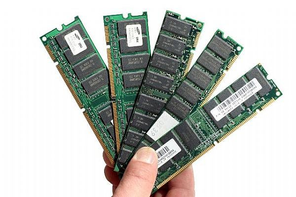

How does RAM works?

Random access memory (RAM) is the best known form of computer memory. RAM is considered "random access" because you can access any memory cell directly if you know the row and column that intersect at that cell.
The opposite of RAM is serial access memory (SAM). SAM stores data as a series of memory cells that can only be accessed sequentially (like a cassette tape). If the data is not in the current location, each memory cell is checked until the needed data is found. SAM works very well for memory buffers, where the data is normally stored in the order in which it will be used (a good example is the texture buffer memory on a video card). RAM data, on the other hand, can be accessed in any order.
Similar to a microprocessor, a memory chip is an integrated circuit (IC) made of millions of transistors and capacitors. In the most common form of computer memory, dynamic random access memory (DRAM), a transistor and a capacitor are paired to create a memory cell, which represents a single bit of data. The capacitor holds the bit of information -- a 0 or a 1 (see How Bits and Bytes Work for information on bits). The transistor acts as a switch that lets the control circuitry on the memory chip read the capacitor or change its state.
A capacitor is like a small bucket that is able to store electrons. To store a 1 in the memory cell, the bucket is filled with electrons. To store a 0, it is emptied. The problem with the capacitor's bucket is that it has a leak. In a matter of a few milliseconds a full bucket becomes empty. Therefore, for dynamic memory to work, either the CPU or the memory controller has to come along and recharge all of the capacitors holding a 1 before they discharge. To do this, the memory controller reads the memory and then writes it right back. This refresh operation happens automatically thousands of times per second.
The capacitor in a dynamic RAM memory cell is like a leaky bucket. It needs to be refreshed periodically or it will discharge to 0. This refresh operation is where dynamic RAM gets its name. Dynamic RAM has to be dynamically refreshed all of the time or it forgets what it is holding. The downside of all of this refreshing is that it takes time and slows down the memory.